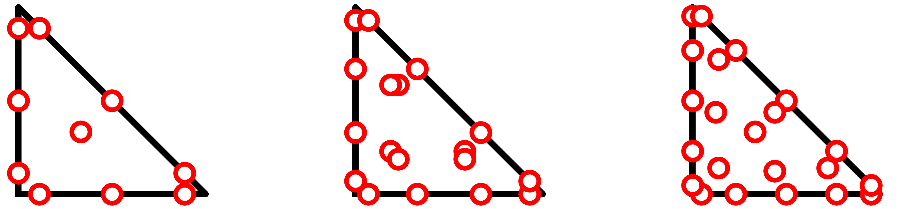
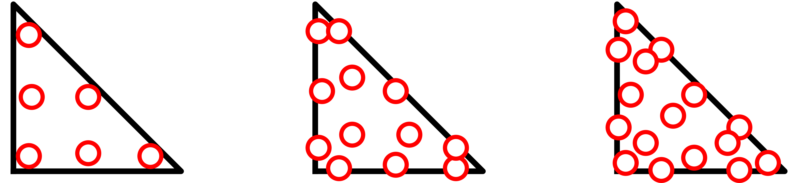
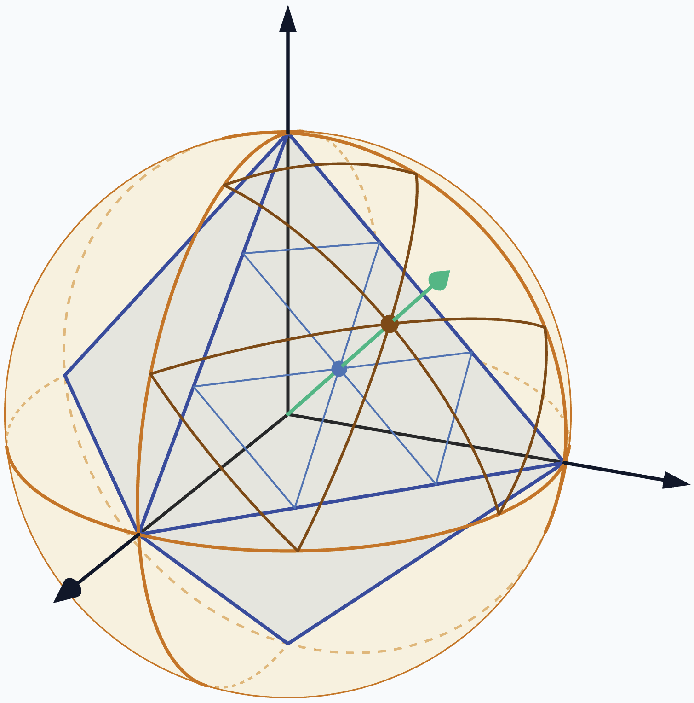
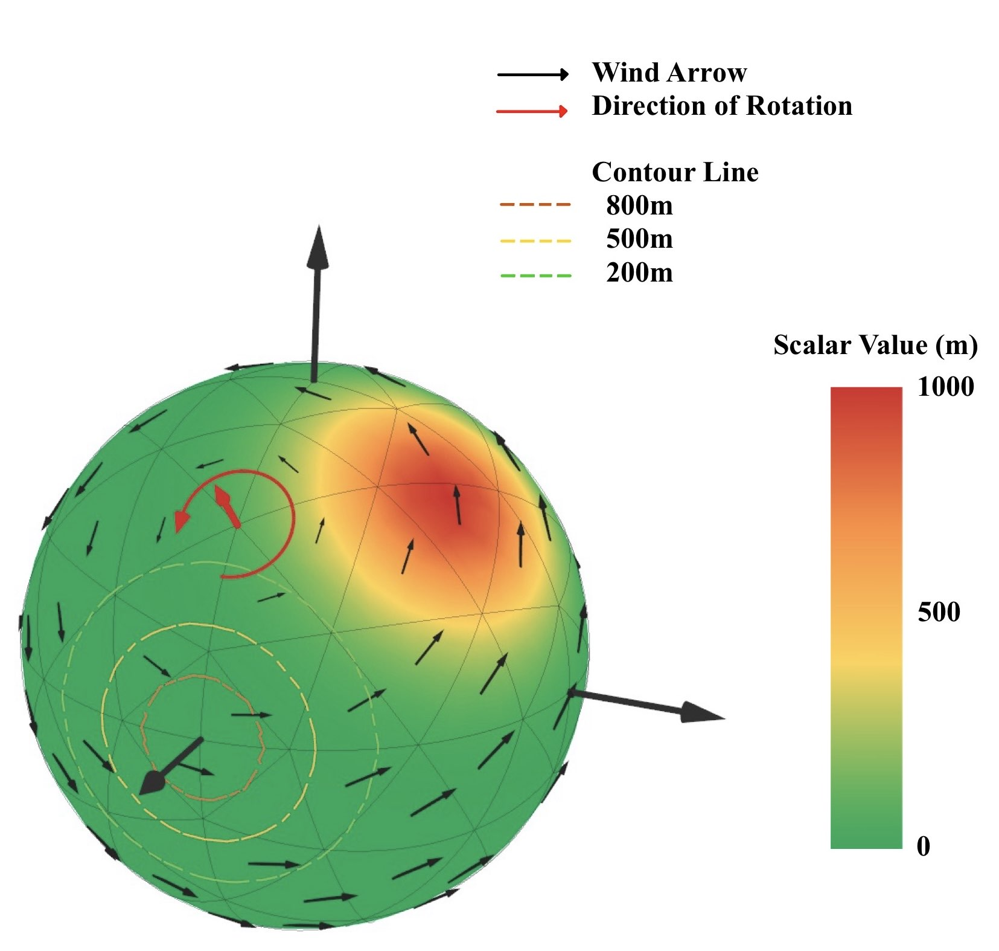
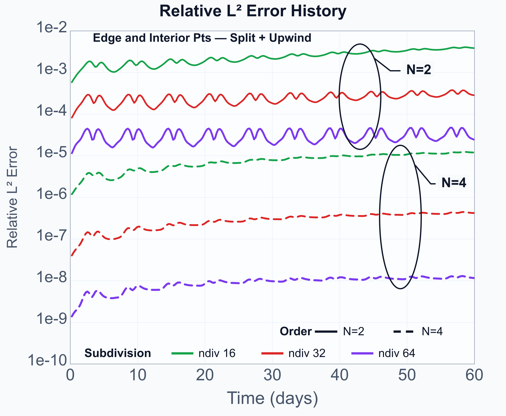
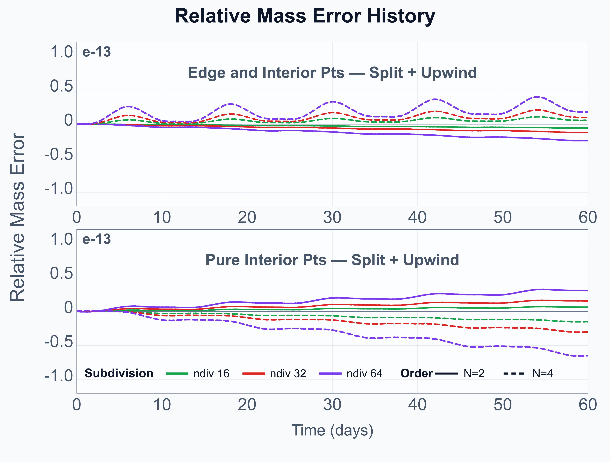

Abstract
A discontinuous Galerkin method in split form is developed on octahedral spherical simplex meshes. Numerical experiments demonstrate designed high-order accuracy,consistent error reduction under mesh refinement across time, and machine-precision mass conservation ($\sim 10^{-14}$) for spherical transport problems.
1. Introduction
Scalar transport on the sphere is widely used in atmospheric and geophysical applications, while longitude–latitude coordinates suffer from singularities at the poles. To avoid this issue, we adopt an octahedron-based triangular manifold mesh.
Since quadrature-nodal DG discretizations generally do not preserve the continuous chain rule or product rule, a split formulation is introduced to correct the discrete structure of the conservation form. Its numerical behavior is then evaluated through the time evolution of mass and $L_2$ errors.
2. Mathematical Formulation
The mapping conservation law is written as
Here, $J$ is the surface Jacobian, while $u^r$ and $u^s$ are the contravariant velocity components.
The mapped conservation law can be rewritten as the split form
3. Mesh Mapping & Field Setup
Symmetric node sets ($N=1 \sim 4$):



3D Gaussian Bell ($q_{\max} = 1000$)
Center $\mathbf{x}_c = (R, 0, 0)^T$, where $R=6.371 \times 10^6$ m is the radius of the Earth, decay factor $\sigma = 10.0$.
Solid-Body Rotation $\mathbf{u}(\mathbf{x})$
Period $T = 12\text{ days}$, $\omega = 2\pi / T$, angle $\alpha_0 = -\pi/4$.

Dashed contours denote initial state ($t = 0$), and solid surface shows half-period position ($t = 6\text{ d}$).
References
- T. Chen and C.-W. Shu, "Entropy stable high order discontinuous Galerkin methods with suitable quadrature rules on triangular meshes," J. Comput. Phys., 345: 427–461, 2017.
- T. Chen and C.-W. Shu, "Review of entropy stable discontinuous Galerkin methods for systems of conservation laws on unstructured simplex meshes," Commun. Comput. Phys., 2020.
4. Discrete Formulation
5. Numerical Results
| Quad. pts. | $N$ | ndiv | DOFs | $\|e\|_2$ | Order | $\|e\|_\infty$ | Order | $\Delta M_{\text{rel}}$ |
|---|---|---|---|---|---|---|---|---|
| edge and interior pts. | 2 | 16 | 20,480 | 3.869e-03 | 3.55 | 6.527e+00 | 3.08 | -5.87e-15 |
| 32 | 81,920 | 2.837e-04 | 3.77 | 6.067e-01 | 3.43 | -1.21e-14 | ||
| 64 | 327,680 | 2.415e-05 | 3.55 | 9.860e-02 | 2.62 | -2.40e-14 | ||
| 4 | 16 | 45,056 | 1.198e-05 | 4.45 | 2.199e-02 | 4.29 | 5.47e-15 | |
| 32 | 180,224 | 4.220e-07 | 4.83 | 9.015e-04 | 4.61 | 1.00e-14 | ||
| 64 | 720,896 | 1.158e-08 | 5.19 | 2.434e-05 | 5.21 | 1.81e-14 | ||
| interior pts. | 2 | 16 | 12,288 | 4.008e-04 | 4.42 | 7.482e-01 | 4.31 | 6.27e-15 |
| 32 | 49,152 | 2.669e-05 | 3.91 | 5.135e-02 | 3.87 | 1.52e-14 | ||
| 64 | 196,608 | 2.873e-06 | 3.22 | 6.326e-03 | 3.02 | 3.04e-14 | ||
| 4 | 16 | 32,768 | 1.978e-06 | 5.07 | 3.791e-03 | 4.90 | -1.51e-14 | |
| 32 | 131,072 | 6.094e-08 | 5.02 | 1.523e-04 | 4.64 | -2.99e-14 | ||
| 64 | 524,288 | 1.622e-09 | 5.23 | 2.595e-06 | 5.88 | -6.45e-14 |


6. Conclusions
This study evaluates a discontinuous Galerkin method in split form for spherical transport problems on octahedral meshes. The main findings and advantages are summarized as follows:
- Singularity-Free Geometric Mapping: Eliminates coordinate pole singularities, providing uniform resolution across the sphere.
- Machine-Precision Conservation & Stability: Achieves exact mass conservation down to machine precision ($\Delta M_{\text{rel}} \sim 10^{-14}$) and ensures long-term numerical stability.
- High-Order Convergence: Solid-body rotation tests confirm designed convergence rates of at least $\mathcal{O}(h^{N+1})$ in relative $L^2$ error norms across all node sets.